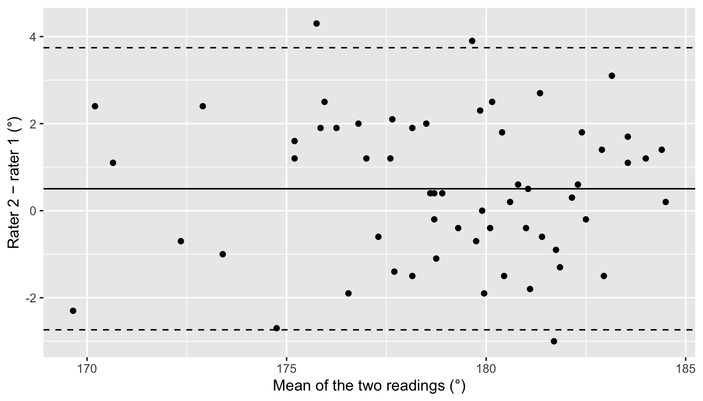
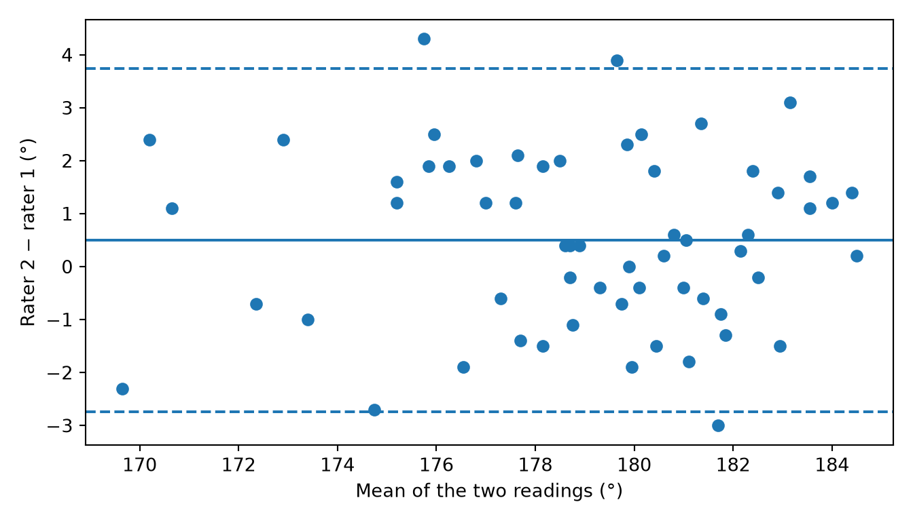

ICC, Bland-Altman limits of agreement, and kappa for radiographic measurements: how well two raters, or one rater on two days, agree.
Before a measurement goes into a study, someone should ask: if it were measured again, would you get the same answer? Alignment angles on long-leg radiographs are a good example. Two surgeons can place the same landmarks a little differently, and one surgeon can place them differently on another day. This page shows how to measure that, using the practice data’s reliability study: 60 knees, each measured by two raters (R1 and R2), twice, at least two weeks apart.
Note💡 How this page works
Run the code blocks in order, from the top: later blocks use the packages and data loaded in the first one.
Reliability or agreement?
The two words are often used as if they meant the same thing. They don’t: - Reliability asks whether a measurement can tell patients apart: are the real differences between knees large compared with the disagreement between readings? It’s measured with the intraclass correlation coefficient (ICC), a number from 0 to 1. Because it compares the disagreement with how much the knees differ, the same raters look more reliable in a cohort with a wider range of deformities. - Agreement asks how close two readings are, in the measurement’s own units. If rater 2 reads every knee 3° higher than rater 1, that’s poor agreement, even though the two raters put the knees in exactly the same order. It’s measured with the Bland-Altman limits of agreement, in degrees.
Report both. A clinician deciding whether a knee is in varus needs to know the agreement in degrees, not only that the ICC was 0.9.
The data are long: one row per knee, rater and session, with the hip-knee-ankle angle (HKA, 180° is neutral, below 180° is varus), the medial proximal tibial angle (MPTA), the lateral distal femoral angle (LDFA) and the CPAK class those angles give.
The intraclass correlation coefficient
There are several ICCs, and the right one depends on the design. Three choices define it (Koo & Li, 2016): - Model: are the raters a random sample of the raters who might use this measurement (two-way random), or the only raters you care about (two-way mixed)? For a measurement other surgeons will use, choose random. - Type: should a rater who always reads higher count against the measurement (absolute agreement) or not (consistency)? For angles that feed clinical decisions, it should: choose absolute agreement. - Unit: will the study use one rater’s reading (single) or the average of several (average)? Usually single.
For inter-rater reliability of HKA, that gives a two-way random, absolute-agreement, single-rater ICC, written ICC(A,1) (or ICC(2,1) in Shrout and Fleiss’s older naming). Using each rater’s first-session readings:
ICC(A,1) = 0.889 (Python’s ICC(A,1) row; R prints 0.889).
95% CI 0.82 to 0.93. Koo and Li’s guide: below 0.5 poor, 0.5 to 0.75 moderate, 0.75 to 0.9 good, above 0.9 excellent. Judge by the CI, not the point estimate: this one runs from good to excellent.
The F test (R) tests whether the ICC is above 0. It nearly always is, so it’s rarely worth reporting.
Warning⚠️ Watch out: always say which ICC
The same data give a different ICC for every model, type and unit: here 0.889 for absolute agreement and 0.896 for consistency, and 0.94 for the average of the two raters. “ICC = 0.94” with no form named can’t be interpreted. Write the form out in the Methods.
Tip🔀 R vs Python: one ICC or all of them
R’s irr::icc() computes the one ICC you ask for. pingouin’s intraclass_corr() computes all six forms at once; pick the row. It labels them two ways: ICC(A,1) in McGraw and Wong’s naming, which matches R’s arguments, or ICC2 in older pingouin versions. pingouin rounds the CI to 2 decimals.
Inter-rater and intra-rater reliability
The ICC above is inter-rater reliability: two raters, same films. Intra-rater (test-retest) reliability uses one rater reading the same films twice, far enough apart that they don’t remember their first answers. The same ICC form applies, with the two sessions in place of the two raters:
Rater 1 agreed with themselves a little better than with rater 2: intra-rater ICC(A,1) = 0.915 (95% CI 0.86 to 0.95), excellent at its point estimate and good to excellent across its CI.
Bland-Altman: how far apart are the readings?
The ICC is a ratio and has no units. To see how far apart two readings can be, in degrees, plot the difference between them against their mean, one point per knee. Then add three lines: - The bias: the mean difference, showing whether one rater reads systematically higher. - The 95% limits of agreement: bias ± 1.96 × SD of the differences. For 95% of knees, rater 2’s reading will fall between these limits relative to rater 1’s.
ggplot(inter_hka, aes(mean, difference)) +geom_point() +geom_hline(yintercept = bias) +geom_hline(yintercept = limits, linetype ="dashed") +labs(x ="Mean of the two readings (°)", y ="Rater 2 − rater 1 (°)")

inter = first_session.pivot(index="knee_id", columns="rater", values="hka_deg")difference = inter["R2"] - inter["R1"]mean = (inter["R1"] + inter["R2"]) /2n_knees =len(difference)bias = difference.mean()sd_diff = difference.std() # pandas uses n - 1, like Rlimits = bias + np.array([-1.96, 1.96]) * sd_diffse_limit = np.sqrt(3* sd_diff**2/ n_knees) # Bland and Altman's SE for each limitt_crit = stats.t.ppf(0.975, n_knees -1)bias_ci = stats.ttest_1samp(difference, 0).confidence_interval()print(round(bias, 3), round(float(bias_ci.low), 3), round(float(bias_ci.high), 3), round(sd_diff, 3), limits.round(3))
0.503 0.076 0.93 1.654 [-2.738 3.744]
print((limits - t_crit * se_limit).round(3), (limits + t_crit * se_limit).round(3)) # CI of each limit: lower ends, upper ends
[-3.477 3.004] [-1.998 4.484]
fig, ax = plt.subplots(figsize=(7, 4))ax.scatter(mean, difference)ax.axhline(bias)for limit in limits: ax.axhline(limit, linestyle="--")ax.set_xlabel("Mean of the two readings (°)")ax.set_ylabel("Rater 2 − rater 1 (°)")plt.tight_layout()plt.show()

Bias = 0.50° (95% CI 0.08° to 0.93°): rater 2 reads half a degree higher than rater 1 on average, the same difference page 7’s exercise 2 found with a paired t test.
Limits of agreement, −2.74° to 3.74°: for 95% of knees, rater 2’s reading will be between 2.7° below and 3.7° above rater 1’s.
The CIs of the limits (−3.48° to −2.00° and 3.00° to 4.48°) show how precisely 60 knees pin the limits down.
The plot: the points scatter evenly around the bias line, with no trend up or down as the mean angle changes. A trend would mean the raters disagree more for some knees (more varus, say) than others, and a single pair of limits wouldn’t describe them.
Whether limits of ±3.7° are good enough is a clinical question, not a statistical one. If a 3° difference moves a knee from “neutral” to “varus” in your study, it matters. Decide the acceptable limits before you run the reliability study, and compare the limits (and their CIs) with them.
Kappa for categories
For a category, like CPAK class, use Cohen’s kappa: the agreement between two raters beyond what chance alone would produce. Kappa is 1 for perfect agreement and 0 for agreement no better than chance.
The raters gave the same CPAK class to 40 of the 60 knees (66.7%), but some of that would happen by chance. Kappa = 0.58 (95% CI 0.44 to 0.73): moderate agreement at its point estimate on Landis and Koch’s scale (0.41 to 0.60 moderate, 0.61 to 0.80 substantial, above 0.80 almost perfect). As with the ICC, judge it by the CI: moderate to substantial.
Weighted kappa for ordered categories. Plain kappa treats every disagreement as equally bad. When the categories have an order, a near miss should count less than a big miss. CPAK class has no single order (it’s a 3 × 3 grid of two angles), but each axis does. The arithmetic HKA group goes varus, neutral, valgus. A weighted kappa gives a disagreement between varus and neutral half the penalty of one between varus and valgus (linear weights):
The raters agreed on the HKA group for 48 of 60 knees, and every disagreement was a near miss: no knee was called varus by one rater and valgus by the other. Unweighted kappa is 0.68; the weighted kappa, which gives near misses partial credit, is 0.73 (95% CI 0.58 to 0.87): substantial at its point estimate, moderate to almost perfect across its CI.
Warning⚠️ Watch out: weighted kappa needs the categories in order
The weights depend on the order of the categories. Put them in their real order (varus, neutral, valgus) yourself. Some functions sort categories alphabetically, which would put “neutral” before “valgus” before “varus” and weight the wrong disagreements: irr::kappa2(weight = "equal") does, and gives 0.63 here instead of 0.73. Never use weighted kappa for categories with no order, like CPAK class itself.
Tip🔀 R vs Python: kappa and its CI
DescTools’ CohenKappa() and statsmodels’ cohens_kappa() give the same kappa and the same CI. DescTools calls linear weights “Equal-Spacing” and quadratic weights “Fleiss-Cohen”; statsmodels uses wt="linear" and wt="quadratic". scikit-learn’s cohen_kappa_score() gives the kappa but no CI, and for weighted kappa it sorts the categories alphabetically unless you pass them in order with labels=.
How to report it
Methods: Two raters measured the hip-knee-ankle angle, MPTA and LDFA on 60 long-leg radiographs, twice, at least 2 weeks apart. Inter- and intra-rater reliability were assessed with two-way random-effects, absolute-agreement, single-rater intraclass correlation coefficients (ICC(A,1)) and interpreted according to Koo and Li. Inter-rater reliability used each rater’s first reading; intra-rater reliability compared rater 1’s two readings. Agreement was assessed with Bland-Altman 95% limits of agreement. Agreement on CPAK class was assessed with Cohen’s kappa, and on the ordered arithmetic HKA group with linearly weighted kappa.
Results: For the hip-knee-ankle angle, the inter-rater ICC was 0.89 (95% CI 0.82 to 0.93) and rater 1’s intra-rater ICC 0.91 (95% CI 0.86 to 0.95). The mean difference between rater 2 and rater 1 was 0.50° (95% CI 0.08° to 0.93°), with 95% limits of agreement from −2.74° (95% CI −3.48° to −2.00°) to 3.74° (95% CI 3.00° to 4.48°). For CPAK class, κ = 0.58 (95% CI 0.44 to 0.73); for the arithmetic HKA group, weighted κ = 0.73 (95% CI 0.58 to 0.87).
Exercises
The solutions use the packages and data loaded in the sections above, so run the page from the top first.
1. Calculate the inter-rater ICC for the MPTA, using each rater’s first-session readings, and describe it with Koo and Li’s guide.
Results: The mean difference between rater 1’s second and first readings was −0.26° (95% CI −0.65° to 0.12°), with 95% limits of agreement from −3.20° to 2.67°.
3. A colleague reports that the two raters’ HKA readings correlate well (Pearson’s r = 0.90, 95% CI 0.83 to 0.94) as evidence that they agree. What’s wrong with that? Show it by adding 5° to every one of rater 2’s readings and recalculating r and the ICC.
TipSolution
Correlation measures whether two readings rise and fall together, not whether they’re equal. A rater who reads every knee 5° too high correlates perfectly well with an accurate one.
Pearson’s r is 0.90 (95% CI 0.83 to 0.94) before and after the shift: it can’t see a systematic difference. The absolute-agreement ICC drops from 0.89 to 0.42 (95% CI −0.04 to 0.78), because a 5° disagreement on every knee is poor agreement. Report the ICC and the Bland-Altman limits, not r.